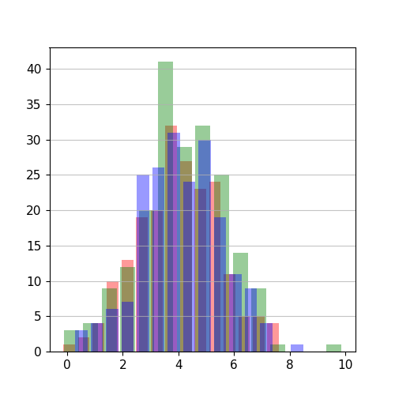

from cleopatra.statistical_glyph import StatisticalGlyph
Statistic Class#
The statistical_glyph module provides a class for creating statistical plots, specifically histograms. The class, Statistic, is designed to handle both 1D (single-dimensional) and 2D (multi-dimensional) data.
Class Documentation#
cleopatra.statistical_glyph.StatisticalGlyph
#
A class for creating statistical plots, specifically histograms.
This class provides methods for initializing the class with numerical values and optional keyword arguments, and for creating histograms from the given values.
Attributes:
| Name | Type | Description |
|---|---|---|
values |
ndarray
|
The numerical values to be plotted as histograms. |
default_options |
dict
|
The default options for creating histograms, including: - bins: Number of histogram bins - color: Colors for the histogram bars - alpha: Transparency of the bars - rwidth: Width of the bars - grid_alpha: Transparency of the grid - xlabel, ylabel: Axis labels - xlabel_font_size, ylabel_font_size: Font sizes for axis labels - xtick_font_size, ytick_font_size: Font sizes for axis ticks |
Methods:
| Name | Description |
|---|---|
histogram |
Creates a histogram from the given values with customizable options. |
Notes
The class can handle both 1D data (single histogram) and 2D data (multiple histograms overlaid on the same plot). For 2D data, the number of colors provided should match the number of data series (columns in the array).
Examples:
Create a histogram from 1D data:
>>> import numpy as np
>>> from cleopatra.statistical_glyph import StatisticalGlyph
>>> np.random.seed(1)
>>> x = 4 + np.random.normal(0, 1.5, 200)
>>> stat_plot = StatisticalGlyph(x)
>>> fig, ax, hist = stat_plot.histogram()
>>> np.random.seed(1)
>>> x = 4 + np.random.normal(0, 1.5, (200, 3))
>>> stat_plot = StatisticalGlyph(x, color=["red", "green", "blue"], alpha=0.4, rwidth=0.8)
>>> fig, ax, hist = stat_plot.histogram()
Example usage:
>>> np.random.seed(1)
>>> x = 4 + np.random.normal(0, 1.5, 200)
>>> stat_plot = StatisticalGlyph(x)
>>> fig, ax, hist = stat_plot.histogram()
>>> print(hist) # doctest: +SKIP
{'n': [array([ 2., 4., 3., 10., 11., 20., 30., 27., 31., 25., 17., 8., 5.,
6., 1.])], 'bins': [array([0.34774335, 0.8440597 , 1.34037605, 1.8366924 , 2.33300874,
2.82932509, 3.32564144, 3.82195778, 4.31827413, 4.81459048,
5.31090682, 5.80722317, 6.30353952, 6.79985587, 7.29617221,
7.79248856])], 'patches': [<BarContainer object of 15 artists>]}
Source code in cleopatra/statistical_glyph.py
74 75 76 77 78 79 80 81 82 83 84 85 86 87 88 89 90 91 92 93 94 95 96 97 98 99 100 101 102 103 104 105 106 107 108 109 110 111 112 113 114 115 116 117 118 119 120 121 122 123 124 125 126 127 128 129 130 131 132 133 134 135 136 137 138 139 140 141 142 143 144 145 146 147 148 149 150 151 152 153 154 155 156 157 158 159 160 161 162 163 164 165 166 167 168 169 170 171 172 173 174 175 176 177 178 179 180 181 182 183 184 185 186 187 188 189 190 191 192 193 194 195 196 197 198 199 200 201 202 203 204 205 206 207 208 209 210 211 212 213 214 215 216 217 218 219 220 221 222 223 224 225 226 227 228 229 230 231 232 233 234 235 236 237 238 239 240 241 242 243 244 245 246 247 248 249 250 251 252 253 254 255 256 257 258 259 260 261 262 263 264 265 266 267 268 269 270 271 272 273 274 275 276 277 278 279 280 281 282 283 284 285 286 287 288 289 290 291 292 293 294 295 296 297 298 299 300 301 302 303 304 305 306 307 308 309 310 311 312 313 314 315 316 317 318 319 320 321 322 323 324 325 326 327 328 329 330 331 332 333 334 335 336 337 338 339 340 341 342 343 344 345 346 347 348 349 350 351 352 353 354 355 356 357 358 359 360 361 362 363 364 365 366 367 368 369 370 371 372 373 374 375 376 377 378 379 380 381 382 383 384 385 386 387 388 389 390 391 392 393 394 395 396 397 398 399 400 401 402 403 404 405 406 407 408 409 410 411 412 413 414 415 416 417 418 419 420 421 422 423 424 425 426 427 428 429 430 431 432 433 434 435 436 437 438 439 440 441 442 443 444 445 446 447 448 449 450 451 452 453 454 455 456 457 458 459 460 461 462 463 464 465 466 467 468 469 470 471 472 473 474 475 476 477 478 479 480 481 482 483 484 485 486 487 488 489 490 491 492 493 494 495 496 497 498 499 500 501 502 503 504 505 506 507 508 509 510 511 512 513 514 515 516 517 518 | |
default_options
property
#
Get the default options for histogram plotting.
This property returns the dictionary of default options used for creating histogram plots. These options can be modified by passing keyword arguments to the class constructor or to the histogram method.
Returns:
| Type | Description |
|---|---|
Dict
|
A dictionary containing the default options for histogram plotting, including: - figsize : tuple Figure size as (width, height) in inches. - bins : int Number of histogram bins. - color : List[str] Colors for the histogram bars. - alpha : float Transparency of the histogram bars. - rwidth : float Relative width of the bars. - grid_alpha : float Transparency of the grid lines. - xlabel, ylabel : str Labels for the x and y axes. - xlabel_font_size, ylabel_font_size : int Font sizes for the axis labels. - xtick_font_size, ytick_font_size : int Font sizes for the axis tick labels. |
Examples:
values
property
writable
#
Get the numerical values to be plotted.
Returns:
| Type | Description |
|---|---|
ndarray or list
|
The numerical values stored in the object, which can be: - 1D array/list for a single histogram - 2D array/list for multiple histograms (one per column) |
Examples:
__init__(values, **kwargs)
#
Initialize the Statistic object with values and optional customization parameters.
Parameters:
| Name | Type | Description | Default |
|---|---|---|---|
values
|
Union[List, ndarray]
|
The numerical values to be plotted as histograms. Can be: - 1D array/list for a single histogram - 2D array/list for multiple histograms (one per column) |
required |
**kwargs
|
dict
|
Additional keyword arguments to customize the histogram appearance. Supported arguments include: - figsize : tuple, optional Figure size as (width, height) in inches, by default (5, 5). - bins : int, optional Number of histogram bins, by default 15. - color : List[str], optional Colors for the histogram bars, by default ["#0504aa"]. For 2D data, the number of colors should match the number of columns. - alpha : float, optional Transparency of the histogram bars, by default 0.7. Values range from 0 (transparent) to 1 (opaque). - rwidth : float, optional Relative width of the bars, by default 0.85. Values range from 0 to 1. - grid_alpha : float, optional Transparency of the grid lines, by default 0.75. - xlabel, ylabel : str, optional Labels for the x and y axes. - xlabel_font_size, ylabel_font_size : int, optional Font sizes for the axis labels. - xtick_font_size, ytick_font_size : int, optional Font sizes for the axis tick labels. |
{}
|
Examples:
Initialize with default options:
>>> import numpy as np
>>> from cleopatra.statistical_glyph import StatisticalGlyph
>>> np.random.seed(1)
>>> x = np.random.normal(0, 1, 100)
>>> stat = StatisticalGlyph(x)
>>> stat_custom = StatisticalGlyph(
... x,
... figsize=(8, 6),
... bins=20,
... color=["#FF5733"],
... alpha=0.5,
... rwidth=0.9,
... xlabel="Values",
... ylabel="Frequency",
... xlabel_font_size=14,
... ylabel_font_size=14
... )
>>> data_2d = np.random.normal(0, 1, (100, 3))
>>> stat_2d = StatisticalGlyph(
... data_2d,
... color=["red", "green", "blue"],
... alpha=0.4
... )
Source code in cleopatra/statistical_glyph.py
145 146 147 148 149 150 151 152 153 154 155 156 157 158 159 160 161 162 163 164 165 166 167 168 169 170 171 172 173 174 175 176 177 178 179 180 181 182 183 184 185 186 187 188 189 190 191 192 193 194 195 196 197 198 199 200 201 202 203 204 205 206 207 208 209 210 211 212 213 214 215 216 217 218 219 220 221 222 223 224 | |
histogram(**kwargs)
#
Create a histogram from the stored numerical values.
This method generates a histogram visualization of the numerical values stored in the object. It can handle both 1D data (single histogram) and 2D data (multiple histograms overlaid on the same plot).
Parameters:
| Name | Type | Description | Default |
|---|---|---|---|
**kwargs
|
dict
|
Additional keyword arguments to customize the histogram appearance. These will override any options set during initialization. Supported arguments include: - figsize : tuple, optional Figure size as (width, height) in inches, by default (5, 5). - bins : int, optional Number of histogram bins, by default 15. - color : List[str], optional Colors for the histogram bars, by default ["#0504aa"]. For 2D data, the number of colors should match the number of columns. - alpha : float, optional Transparency of the histogram bars, by default 0.7. Values range from 0 (transparent) to 1 (opaque). - rwidth : float, optional Relative width of the bars, by default 0.85. Values range from 0 to 1. - grid_alpha : float, optional Transparency of the grid lines, by default 0.75. - xlabel, ylabel : str, optional Labels for the x and y axes. - xlabel_font_size, ylabel_font_size : int, optional Font sizes for the axis labels. - xtick_font_size, ytick_font_size : int, optional Font sizes for the axis tick labels. |
{}
|
Returns:
| Type | Description |
|---|---|
Figure
|
The matplotlib Figure object containing the histogram. |
Axes
|
The matplotlib Axes object on which the histogram is drawn. |
Dict
|
A dictionary containing the histogram data with keys: - 'n': List of arrays containing the histogram bin counts - 'bins': List of arrays containing the bin edges - 'patches': List of BarContainer objects representing the histogram bars |
Raises:
| Type | Description |
|---|---|
ValueError
|
If an invalid keyword argument is provided. |
ValueError
|
If the number of colors provided doesn't match the number of data series (columns) in 2D data. |
Notes
For 2D data, multiple histograms will be overlaid on the same plot with different colors. The transparency (alpha) can be adjusted to make overlapping regions visible.
Examples:
-
1D data.
-
Create a histogram from 1D data:
>>> import numpy as np >>> from cleopatra.statistical_glyph import StatisticalGlyph >>> np.random.seed(1) >>> x = 4 + np.random.normal(0, 1.5, 200) >>> stat_plot = StatisticalGlyph(x) >>> fig, ax, hist = stat_plot.histogram() >>> print(hist) # doctest: +SKIP {'n': [array([ 2., 4., 3., 10., 11., 20., 30., 27., 31., 25., 17., 8., 5., 6., 1.])], 'bins': [array([0.34774335, 0.8440597 , 1.34037605, 1.8366924 , 2.33300874, 2.82932509, 3.32564144, 3.82195778, 4.31827413, 4.81459048, 5.31090682, 5.80722317, 6.30353952, 6.79985587, 7.29617221, 7.79248856])], 'patches': [<BarContainer object of 15 artists>]} -
Create a histogram with custom bin count and labels:
-
-
2D data.
- Create a histogram with custom bin count and labels:

>>> np.random.seed(1) >>> x = 4 + np.random.normal(0, 1.5, (200, 3)) >>> stat_plot = StatisticalGlyph(x, color=["red", "green", "blue"], alpha=0.4, rwidth=0.8) >>> fig, ax, hist = stat_plot.histogram() >>> print(hist) # doctest: +SKIP {'n': [array([ 1., 2., 4., 10., 13., 19., 20., 32., 27., 23., 24., 11., 5., 5., 4.]), array([ 3., 4., 9., 12., 20., 41., 29., 32., 25., 14., 9., 1., 0., 0., 1.]), array([ 3., 4., 6., 7., 25., 26., 31., 24., 30., 19., 11., 9., 4., 0., 1.])], 'bins': [array([-0.1896275 , 0.33461786, 0.85886323, 1.38310859, 1.90735396, 2.43159932, 2.95584469, 3.48009005, 4.00433542, 4.52858078, 5.05282615, 5.57707151, 6.10131688, 6.62556224, 7.14980761, 7.67405297]), array([-0.1738017 , 0.50031202, 1.17442573, 1.84853945, 2.52265317, 3.19676688, 3.8708806 , 4.54499432, 5.21910804, 5.89322175, 6.56733547, 7.24144919, 7.9155629 , 8.58967662, 9.26379034, 9.93790406]), array([0.24033902, 0.7940688 , 1.34779857, 1.90152835, 2.45525813, 3.0089879 , 3.56271768, 4.11644746, 4.67017723, 5.22390701, 5.77763679, 6.33136656, 6.88509634, 7.43882612, 7.99255589, 8.54628567])], 'patches': [<BarContainer object of 15 artists>, <BarContainer object of 15 artists>, <BarContainer object of 15 artists>]}
Access the histogram data:
```python >>> # Get the bin counts for the first data series >>> bin_counts = hist['n'][0] >>> # Get the bin edges for the first data series >>> bin_edges = hist['bins'][0] `` - Create a histogram with custom bin count and labels:
Source code in cleopatra/statistical_glyph.py
326 327 328 329 330 331 332 333 334 335 336 337 338 339 340 341 342 343 344 345 346 347 348 349 350 351 352 353 354 355 356 357 358 359 360 361 362 363 364 365 366 367 368 369 370 371 372 373 374 375 376 377 378 379 380 381 382 383 384 385 386 387 388 389 390 391 392 393 394 395 396 397 398 399 400 401 402 403 404 405 406 407 408 409 410 411 412 413 414 415 416 417 418 419 420 421 422 423 424 425 426 427 428 429 430 431 432 433 434 435 436 437 438 439 440 441 442 443 444 445 446 447 448 449 450 451 452 453 454 455 456 457 458 459 460 461 462 463 464 465 466 467 468 469 470 471 472 473 474 475 476 477 478 479 480 481 482 483 484 485 486 487 488 489 490 491 492 493 494 495 496 497 498 499 500 501 502 503 504 505 506 507 508 509 510 511 512 513 514 515 516 517 518 | |
Examples#
1D Data Example#
import numpy as np
import matplotlib.pyplot as plt
from cleopatra.statistical_glyph import StatisticalGlyph
# Create some random 1D data
np.random.seed(1)
data_1d = 4 + np.random.normal(0, 1.5, 200)
# Create a Statistic object with the 1D data
stat_plot_1d = StatisticalGlyph(data_1d)
# Generate a histogram plot for the 1D data
fig_1d, ax_1d, hist_1d = stat_plot_1d.histogram()

2D Data Example#
# Create some random 2D data
data_2d = 4 + np.random.normal(0, 1.5, (200, 3))
# Create a Statistic object with the 2D data
stat_plot_2d = StatisticalGlyph(data_2d, color=["red", "green", "blue"], alpha=0.4, rwidth=0.8)
# Generate a histogram plot for the 2D data
fig_2d, ax_2d, hist_2d = stat_plot_2d.histogram()